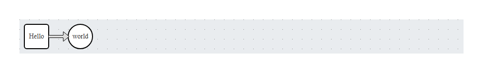

Create interactive ‘JointJS’ diagrams. This package wraps the ‘JointJS’ JavaScript library to create interactive html widgets. It will let the user draw and interact with diagrams.
Installation
You can install the development version of jointjs from GitHub with:
# install.packages("pak")
pak::pak("pepijn-devries/jointjs")Example
This package uses R6 class objects to create graphs and define its elements:
library(jointjs)
graph <-
jointjs_graph$
## Create a new graph:
new()$
## Add elements:
add_elements(
## Add a rectangle:
jointjs_rectangle$new(id = "hello")$
set_body(rx = 5, ry = 5)$
set_label("Hello")$
set_position(10, 10),
## Add a circle:
jointjs_circle$new(id = "world")$
set_label("world")$
set_body("white", "black")$
set_position(100, 10),
## Add a link, joining the rectangle and circle:
jointjs_doubleLink$new(list(id = "hello"), list(id = "world"))
)
## Get and show widget:
my_widget <- graph$get_widget(width = 170, height = 70)
Note that this page cannot render interactive diagrams. Therefore, it only shows a static screenshot of the widget generated by the code chunk.
Alternatives
- dagitty A free web-based application and a matching R package used to draw, edit, and analyze causal diagrams.
- diagram Plots networks from transition matrices and plots food webs. It focuses on R base plots.
- DiagrammeR: Build and manipulate nodes and edges programmatically using R syntax or specialized text languages. Supports DOT language to create diagrams.
- ggdag A wrapper around dagitty that allows to add graph layers to ggplots.
-
ggraph A standard for ggplot2 users. It treats nodes and edges as standard ggplot layers (
geom_node_point(),geom_edge_link()), allowing you to use familiar themes, scales, and facets for network data. -
igraph Essential for network analysis in R. While primarily used for computing graph mathematics (centrality, paths), it includes robust base-R plotting capabilities (
plot.igraph) for traditional network rendering. - networkD3 Creates interactive force-directed graphs and node-link diagrams using D3.js. It is excellent for quick, clean, and responsive web animations with minimal code.
- sigmajs An interface to the Sigma.js library, specifically optimized for rendering massive, complex graphs smoothly using WebGL.
- visNetwork Uses the vis.js JavaScript library to create highly interactive, customisable network graphs. You can drag nodes, zoom, filter, and animate networks.